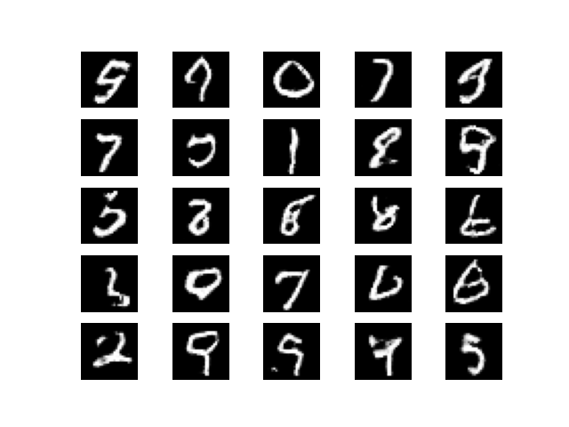

[Day 20]Optuna的更多應用，最佳化生成對抗網路(GAN)(1/2)
- Day: 20
- Date: 2024-09-26 00:03:07
- Author: golucky_sir
- Source: https://ithelp.ithome.com.tw/articles/10358474
- Series: https://ithelp.ithome.com.tw/2020-12th-ironman/articles/7610
- Series Title: 調整AI超參數好煩躁？來試試看最佳化演算法吧！
前言
昨天介紹了MLP與CNN的最佳化，不過在去年我介紹生成式AI的時候曾經許願要來針對GAN進行最佳化，今天就要來完成去年的夢想，來實現GAN網路了。
最佳化目標
這次想挑訓練比較不穩定的DCGAN進行最佳化看看，對DCGAN有興趣歡迎觀看去年我的鐵人賽文章，以及DCGAN實作的部分。
明明只過了一年，但卻覺得DCGAN已經快要變成古董了XD
DCGAN程式碼
各位可以直接到我去年介紹的文章中，我有附上DCGAN完整程式碼，程式碼的詳細說明可以參考去年的文章。
今天會挑選部分程式來進行修改，底下也會附上完整修改過的程式碼喔。之前執行時有經過一些手動調整與最佳化，所以才能跑出比較能看的結果，今天就來嘗試進一步的最佳化GAN模型吧！
DCGAN的程式碼使用去年的程式碼並獨立分成一個檔案DCGAN.py，在主程式直接調用會讓程式碼比較簡潔，這段程式會附在最底下。
構思問題
首先DCGAN有許多超參數是可以調整的，同時我在去年第29天與第30天也介紹了許多用於評估生成式AI的指標，因為FID、KID等基於深度學習的指標會要求輸入長寬與色彩通道必須為3，所以這次我們就使用PSNR跟SSIM指標來進行最佳化吧。
PSNR越高越好，PSNR通常數值比較高，大約0~50左右；而SSIM越接近1越好，SSIM數值比較低，大約0~1左右，有時候會為比較小的負數，所以為了平衡將SSIM的結果*50再加上PSNR再除以2作為適應值回傳，各位也可以嘗試使用多目標的方式來進行最佳化。
這次也是因篇幅所以不會新增太多其他的功能，儲存模型與訓練資料等部分在此就不過多敘述了，各位可以看看我去年的文章來理解這些部分的細節。
為了要正確執行結果並展示內容，以及要顧及到我電腦的效能，所以範例的一些內容會被簡化(例如試驗次數與每次試驗訓練DCGAN的次數)，基本上顧慮到節省效能所以模型訓練結果應該不會太好，所以在實務應用上請依據實際需求去更改。
| 5W1H | 規劃內容 |
|---|---|
| Why | 最佳化DCGAN模型，目標為適應值越高越好 |
| What | 最佳化問題是DCGAN的圖片生成，以PSNR與SSIM指標作為適應值 |
| Who | 預計對DCGAN中的生成器與判別器的學習率、第一層卷積網路的神經元數量、卷積層的卷積核大小以及判別器中LeakyReLU的斜率alpha進行最佳化 |
| Where | 學習率設定在0.00001~0.001、生成器第一層神經元數量從[32, 64, 128, 256]中搜尋；生成器第一層神經元數量從[64, 128, 256, 512]中搜尋、卷積層的卷積核大小為1~5、alpha設定0.01~0.5。 |
| When | 測試跑完一次程式後確定沒問題即可著手進行最佳化。 |
| How | 使用Optuna |
跑完程式後程式並沒有噴錯誤，適應值指標也有正確回傳，所以可以執行最佳化了。在最佳化時DCGAN訓練次數統一為8000次(20000次太久了><)，各位可以將訓練次數也納入尋求最佳解的因素之一。
下圖為使用20000次訓練次數跑完一次程式後，我經過一些後續處理得到的圖片(這段程式碼可參考去年的文章，今天範例並沒有復現出來)。

實現Optuna最佳化
首先也是是一樣來制定一下流程，並且逐步地將最佳化程式撰寫出來。
-
定義目標函數：這次目標函數比較容易，因為之前DCGAN已經將功能都寫好了，為了不讓程式內容變動太大，所以這次載入資料等就在試驗中載入就好了。
def objective_DCGAN(trial): -
新增要帶入目標函數的變數：這次要帶入的變數比較多，原則上最佳化生程式AI有很多因素可以進行調整，這次範例所使用的變數有生成器與判別器的學習率、第一層卷積網路的神經元數量、卷積層的卷積核大小以及判別器中LeakyReLU的斜率alpha。
這些設定範圍上面的表格中有提及到，以下就展示設定的程式碼，另外為了使浮點數的數值比較好看，我應用了步進值來設定搜尋空間範圍之間的公差。generator_lr = trial.suggest_float('generator_lr', 0.00001, 0.001, step=0.00002) discriminator_lr = trial.suggest_float('discriminator_lr', 0.00001, 0.001, step=0.00002) g_first_layer_unit = trial.suggest_categorical('g_first_layer_unit', [32, 64, 128, 256]) d_first_layer_unit = trial.suggest_categorical('d_first_layer_unit', [64, 128, 256, 512]) g_k = trial.suggest_int('g_k', 1, 5) d_k = trial.suggest_int('d_k', 1, 5) alpha = trial.suggest_float('alpha', 0.01, 0.5, step=0.01) -
新增其他功能：因為篇幅關係，就不提及其他的功能了。
各位可以在每次執行試驗時先新增一個該次試驗的資料夾，具體使用os模組的os.makedirs(path)就好了。
接著將該次試驗時產生的資料，例如損失變化、訓練過程產生的圖片、網路模型等都儲存進資料夾中方便後續分析用。 -
定義回傳適應值：在DCGAN.py中我有新增一個副程式用於計算適應值，在主程式中只需要調用並回傳即可，就像這樣：
return gan.calculate_finess_value()。
以下是在DCGAN.py中定義的適應值計算的部分，各位可以看看註解的說明，以理解適應值設定的方式，設定並沒有絕對正確的方式，可以根據需求設定~def calculate_finess_value(self): noise = np.random.normal(0, 1, (50, 100)) # 將資料格式統一成float32否則計算指標可能會出現錯誤 gen_imgs = self.generator.predict(noise).astype('float32') x_train = self.load_data()[:50].astype('float32') # PSNR越高越好，PSNR通常數值比較高，大約0~50左右 psnr = np.mean(tf.image.psnr(gen_imgs, x_train, max_val=1)) # SSIM越接近1越好，SSIM數值比較低，大約0~1左右，有時候會為比較小的負數 ssim = np.mean(tf.image.ssim(gen_imgs, x_train, max_val=1)) # 為了平衡將SSIM的結果*50再加上PSNR再除以2作為適應值回傳 return (psnr + 50*ssim)/2 -
定義一個試驗：這部分也並沒有太多需要修改的內容，因為PSNR與SSIM都需要求較高的值，所以最佳化目標也是求最大值，程式碼如下：
study = optuna.create_study(direction='maximize', sampler=optuna.samplers.TPESampler(seed=42)) -
執行最佳化：為了節省程式執行的總時間，我的試驗次數也只設定10次，跟昨天介紹的MLP與CNN一樣，實際上會建議再使用多一點次數，程式碼如下：
study.optimize(objective_DCGAN, n_trials=10) -
將最佳解print出來：這部分也沒太大變化。
print(study.best_params) print(study.best_value) -
查看程式執行過程：這部分除了將最佳化過程的圖片顯示出來以外，我也把各參數的重要性給繪製出來，畢竟這次使用的超參數相當多，共有7組參數被用來尋求最佳值。
這些資訊可以讓各位評估若要再進行一次最佳化時，有沒有需要把不重要的因素排除；重要的因素可以再設定廣一點的搜索空間。因為程式執行需要時間，第7步驟與第8步驟的結果部份我們留到明天再來細講。
結語
雖然目前生成式AI大多都是擴散模型(Diffusion Model, DM)的天下了，不過最佳化擴散模型花費的時間太久了XD我電腦的性能也會吃不消，所以今天這兩天就只介紹最佳化GAN，不過經過這幾天大量的範例介紹相信各位已經可以靈活應用於自己的任務了！
目前程式執行後會花比較久的時間去進行最佳化，所以明天再來探討程式的執行結果吧。
附錄：完整程式(最佳化DCGAN)
import numpy as np
import optuna
import matplotlib.pyplot as plt
from DCGAN import DCGAN
def objective_DCGAN(trial):
"""
DCGAN 網路訓練的最佳化。
"""
generator_lr = trial.suggest_float('generator_lr', 0.00001, 0.001, step=0.00002)
discriminator_lr = trial.suggest_float('discriminator_lr', 0.00001, 0.001, step=0.00002)
g_first_layer_unit = trial.suggest_categorical('g_first_layer_unit', [32, 64, 128, 256])
d_first_layer_unit = trial.suggest_categorical('d_first_layer_unit', [64, 128, 256, 512])
g_k = trial.suggest_int('g_k', 1, 5)
d_k = trial.suggest_int('d_k', 1, 5)
alpha = trial.suggest_float('alpha', 0.01, 0.5, step=0.01)
gan = DCGAN(generator_lr=generator_lr,
discriminator_lr=discriminator_lr,
g_first_layer_unit=g_first_layer_unit,
d_first_layer_unit=d_first_layer_unit,
g_k=g_k,
d_k=d_k,
alpha=alpha)
gan.train(epochs=8000, batch_size=128)
return gan.calculate_finess_value()
if __name__ == '__main__':
# 新增最佳化試驗
study = optuna.create_study(direction='maximize', sampler=optuna.samplers.TPESampler(seed=42))
study.optimize(objective_DCGAN, n_trials=10)
# 將試驗中的最佳解print出來。
print(study.best_params)
print(study.best_value)
# 繪製試驗的最佳化過程
optuna.visualization.matplotlib.plot_optimization_history(study)
plt.tight_layout()
plt.show()
# 繪製超參數因素重要性
optuna.visualization.matplotlib.plot_param_importances(study)
plt.tight_layout()
plt.show()
附錄：完整程式(DCGAN.py)
from tensorflow.keras.datasets import mnist
from tensorflow.keras.layers import Input, Dense, Reshape, Flatten, BatchNormalization, LeakyReLU, Activation, Conv2DTranspose, Conv2D
from tensorflow.keras.models import Model
from tensorflow.keras.optimizers import Adam
import numpy as np
import tensorflow as tf
class DCGAN():
def __init__(self,
generator_lr,
discriminator_lr,
g_first_layer_unit,
d_first_layer_unit,
g_k,
d_k,
alpha):
"""
定義DCGAN的基本功能，包括定義模型，訓練模型，回傳適應值等。
Args:
generator_lr: 生成器學習率
discriminator_lr: 判別器學習率
g_first_layer_unit: 生成器第一層隱藏層卷積層的神經元數量，後續網路神經元數量都為第一層神經元數量之倍數。
d_first_layer_unit: 判別器第一層隱藏層卷積層的神經元數量，後續網路神經元數量都為第一層神經元數量之倍數。
g_k: 生成器卷積核大小
d_k: 判別器卷積核大小
alpha: 判別器LeakyReLU之負數部分斜率。
"""
self.generator_lr = generator_lr
self.discriminator_lr = discriminator_lr
self.g_first_layer_unit = g_first_layer_unit
self.d_first_layer_unit = d_first_layer_unit
self.g_k = g_k
self.d_k = d_k
self.alpha = alpha
self.discriminator = self.build_discriminator()
self.generator = self.build_generator()
self.adversarial = self.build_adversarialmodel()
# Loss儲存在本範例不會用到，若有興趣可以自己實作後續損失分析等部分
self.gloss = []
self.dloss = []
def load_data(self):
(x_train, _), (_, _) = mnist.load_data() # 底線是未被用到的資料，可忽略
x_train = x_train / 255 # 正規化
x_train = x_train.reshape((-1, 28, 28, 1))
return x_train
def build_generator(self):
input_ = Input(shape=(100, ))
x = Dense(7*7*32)(input_)
x = Activation('relu')(x)
x = BatchNormalization(momentum=0.8)(x)
x = Reshape((7, 7, 32))(x)
# 設定第一層卷積網路的神經元數量以及卷積核大小
x = Conv2DTranspose(self.g_first_layer_unit, kernel_size=self.g_k, strides=2, padding='same')(x)
x = Activation('relu')(x)
x = BatchNormalization(momentum=0.8)(x)
# 設定第二層卷積網路的神經元數量，數量為第一層的2倍。以及卷積核大小
x = Conv2DTranspose(self.g_first_layer_unit*2, kernel_size=self.g_k, strides=2, padding='same')(x)
x = Activation('relu')(x)
x = BatchNormalization(momentum=0.8)(x)
out = Conv2DTranspose(1, kernel_size=self.g_k, strides=1, padding='same', activation='sigmoid')(x)
model = Model(inputs=input_, outputs=out, name='Generator')
model.summary()
return model
def build_discriminator(self):
input_ = Input(shape = (28, 28, 1))
# 設定第一層卷積網路的神經元數量以及卷積核大小
x = Conv2D(self.d_first_layer_unit, kernel_size=self.d_k, strides=2, padding='same')(input_)
x = LeakyReLU(alpha=self.alpha)(x) # 設定LeakyReLU的斜率
# 設定第二層卷積網路的神經元數量，數量為第一層的1/2倍，//為計算商數。以及卷積核大小
x = Conv2D(self.d_first_layer_unit//2, kernel_size=self.d_k, strides=2, padding='same')(x)
x = LeakyReLU(alpha=self.alpha)(x) # 設定LeakyReLU的斜率
# 設定第三層卷積網路的神經元數量，數量為第一層的1/4倍，//為計算商數。以及卷積核大小
x = Conv2D(self.d_first_layer_unit//4, kernel_size=self.d_k, strides=1, padding='same')(x)
x = LeakyReLU(alpha=self.alpha)(x) # 設定LeakyReLU的斜率
x = Flatten()(x)
out = Dense(1, activation='sigmoid')(x)
model = Model(inputs=input_, outputs=out, name='Discriminator')
dis_optimizer = Adam(learning_rate=self.discriminator_lr , beta_1=0.5)
model.compile(loss='binary_crossentropy',
optimizer=dis_optimizer,
metrics=['accuracy'])
model.summary()
return model
def build_adversarialmodel(self):
noise_input = Input(shape=(100, ))
generator_sample = self.generator(noise_input)
self.discriminator.trainable = False
out = self.discriminator(generator_sample)
model = Model(inputs=noise_input, outputs=out)
adv_optimizer = Adam(learning_rate=self.generator_lr, beta_1=0.5)
model.compile(loss='binary_crossentropy', optimizer=adv_optimizer)
model.summary()
return model
def train(self, epochs, batch_size=128):
# 準備訓練資料
x_train = self.load_data()
# 準備訓練的標籤，分為真實標籤與假標籤
valid = np.ones((batch_size, 1))
fake = np.zeros((batch_size, 1))
for epoch in range(epochs):
# 隨機取一批次的資料用來訓練
idx = np.random.randint(0, x_train.shape[0], batch_size)
imgs = x_train[idx]
# 從常態分佈中採樣一段雜訊
noise = np.random.normal(0, 1, (batch_size, 100))
# 生成一批假圖片
gen_imgs = self.generator.predict(noise)
# 判別器訓練判斷真假圖片
d_loss_real = self.discriminator.train_on_batch(imgs, valid)
d_loss_fake = self.discriminator.train_on_batch(gen_imgs, fake)
d_loss = 0.5 * np.add(d_loss_real, d_loss_fake)
#儲存鑑別器損失變化 索引值0為損失 索引值1為準確率
self.dloss.append(d_loss[0])
# 訓練生成器的生成能力
noise = np.random.normal(0, 1, (batch_size, 100))
g_loss = self.adversarial.train_on_batch(noise, valid)
# 儲存生成器損失變化
self.gloss.append(g_loss)
# 將這一步的訓練資訊print出來
print(f"Epoch:{epoch} [D loss: {d_loss[0]}, acc: {100 * d_loss[1]:.2f}] [G loss: {g_loss}]")
def calculate_finess_value(self):
noise = np.random.normal(0, 1, (50, 100))
# 將資料格式統一成float32否則計算指標可能會出現錯誤
gen_imgs = self.generator.predict(noise).astype('float32')
x_train = self.load_data()[:50].astype('float32')
# PSNR越高越好，PSNR通常數值比較高，大約0~50左右
psnr = np.mean(tf.image.psnr(gen_imgs, x_train, max_val=1))
# SSIM越接近1越好，SSIM數值比較低，大約0~1左右，有時候會為比較小的負數
ssim = np.mean(tf.image.ssim(gen_imgs, x_train, max_val=1))
# 為了平衡將SSIM的結果*50再加上PSNR再除以2作為適應值回傳
return (psnr + 50*ssim)/2
if __name__ == '__main__':
# 執行一次看看程式有沒有問題
gan = DCGAN(generator_lr=0.0002,discriminator_lr=0.0002, g_first_layer_unit=128,
d_first_layer_unit=128, g_k=2, d_k=2, alpha=0.2)
gan.train(epochs=20000, batch_size=128)